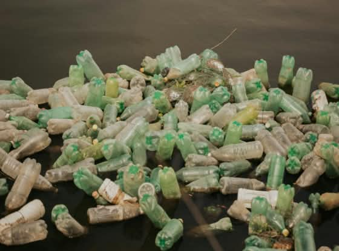
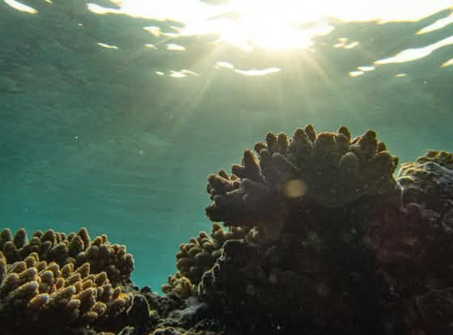
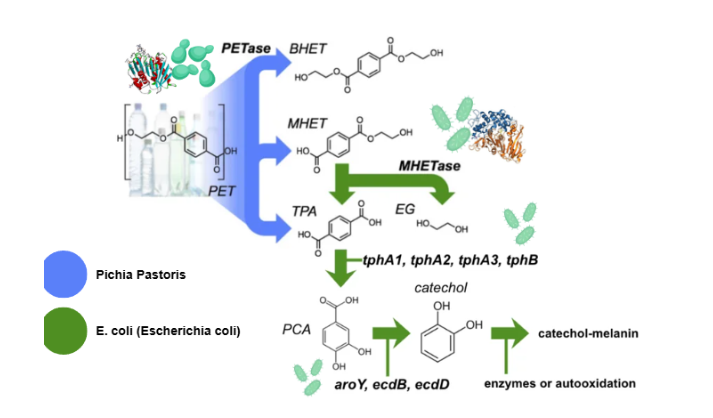

Persistent Plastic Waste

Over 1.8 million tons of plastic waste are generated annually in Thailand, with less than 20% currently recycled. Uncollected PET bottles regularly contaminate vital river systems and marine ecosystems.

What if the plastic we leave behind could help protect what lies ahead?
Before we can build a solution, we must look at the two interconnected environmental challenges unfolding right here in Thailand.

Over 1.8 million tons of plastic waste are generated annually in Thailand, with less than 20% currently recycled. Uncollected PET bottles regularly contaminate vital river systems and marine ecosystems.

Thailand endures extreme year-round UV exposure. However, commercial chemical sunscreens containing oxybenzone severely harm coral larvae, leading to national bans across all Thai marine national parks.
To address both plastic pollution and reef degradation simultaneously, MELANIFY bridges the gap with a single biological pathway.

By engineering this multi-step pathway, MELANIFY unlocks three key impacts across environmental, economic, and functional performance.
 01
01
Replaces toxic synthetic sunscreen chemicals like oxybenzone with a proposed biodegradable, non-nano biomaterial designed to protect human skin while reducing potential harm to coral reefs and marine life.
 02
02
Transforms uncollected PET plastic bottles into a potential high-value pigment, helping divert persistent plastic pollution from Thai rivers and oceans toward a circular, resource-recovery model.
 03
03
Explores the potential of natural light absorption and free-radical scavenging to support UV protection and antioxidant performance in future biomaterial applications.
Dive into our iterative Design-Build-Test-Learn cycles, enzyme characterizations, and expression models behind the six-step MELANIFY pathway.
Explore Our Engineering